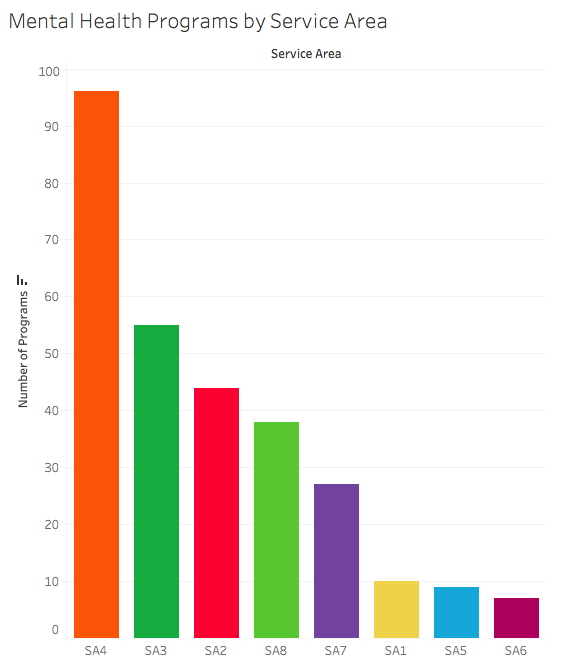
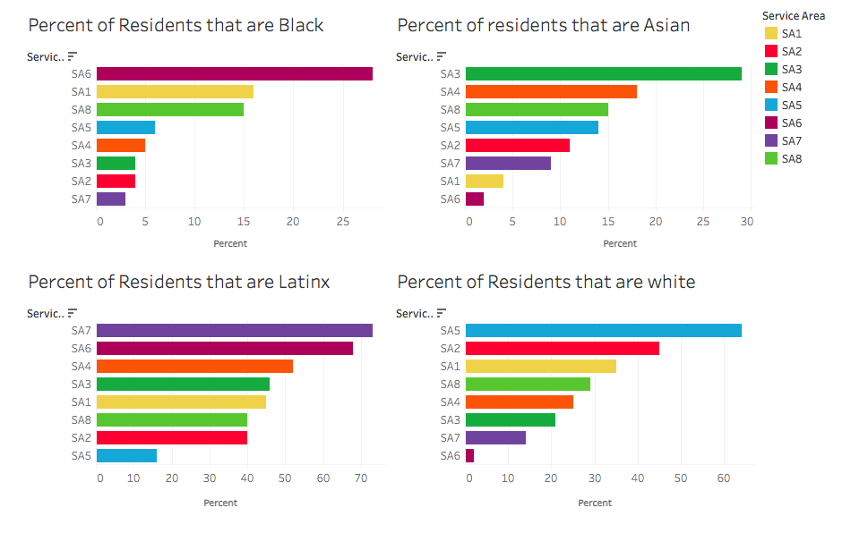
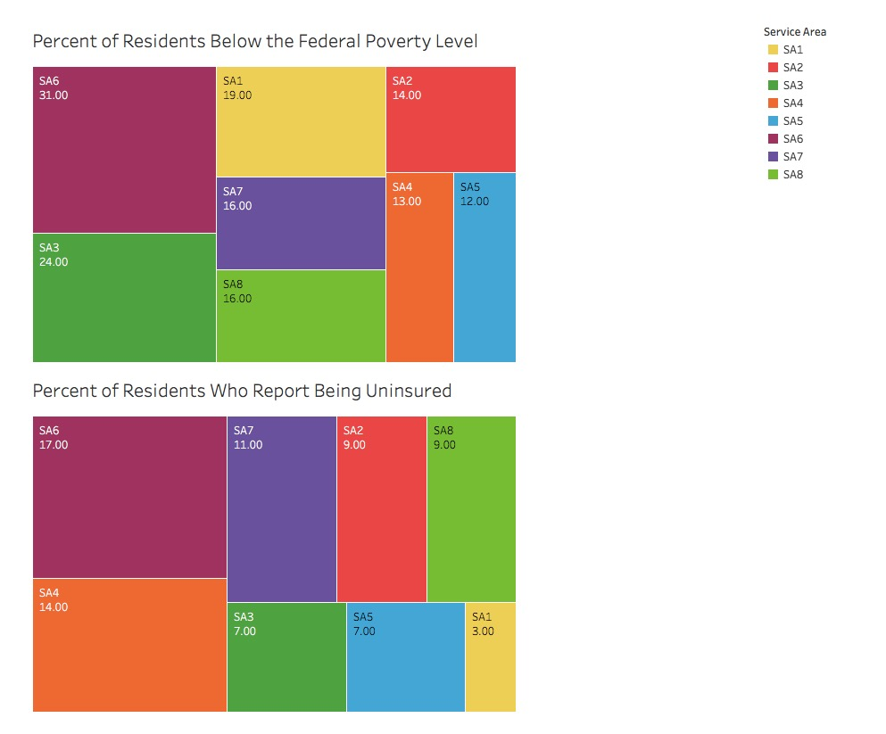
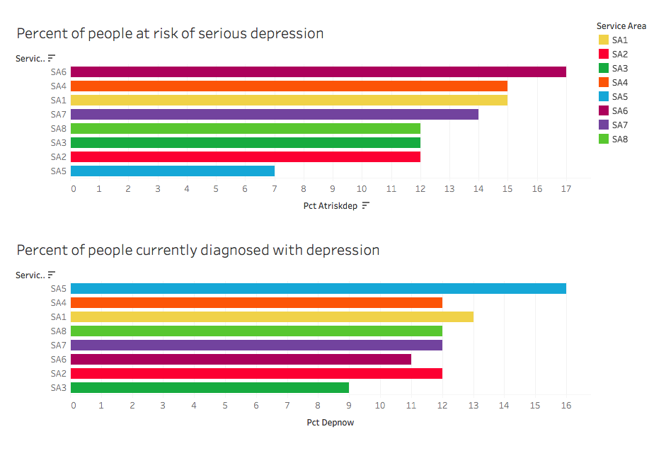

Infographics and Population Data Visuals

Figure 1. Comparing the list of population sizes (next to the map) with this graph of programs,
one can see that the number of programs in each service area do not necessarily
correspond with the populations of each service area. For example, SPA 2-San Fernando
has the largest population but only the third-most services. SPA 6-South is only
slightly smaller than SPA 4-Metro, yet the number of services in the former are
significantly less than in the latter. Of course, need is not just measured by
population size, so we turned to more demographic information to investigate the
discrepancies.

Figure 2. Another crucial factor is race of residents, as BIPOC communities are historically underresourced.
SPA-6 has the highest population of Black people and second highest population of Latinx people,
speaking to the racism that structures disadvantages and exacerbates mental health issues by through
the psychological and emotional tolls it can take on BIPOC people. Meanwhile, an area like SPA-2, which has
the second highest white population has one of the highest numbers of programs.
Further analysis can go into more depth about each service area, but there are clearly
identified gaps between needs and services, geographically and demographically, that are already
issues to be addressed.

Figure 3. These graphs show the percentages of residents who are below the federal poverty line and who are uninsured,
both demographic factors that affect accessibility to mental care. Unsurprisingly, SPA-6 has the highest percentages in these
categories, showing that an extreme need for services is inaccessible both geographically and financially.

Figure 4. The first chart includes people at serious risk of depression, of which SPA6 has the highest percentage.
This alone indicates a huge discrepancy between the number of mental health programs in SPA6
and its need for programs and services. One of the reasons for this discrepancy might be indicated in
the second graph, which shows how residents of SPA6 have some of the lowest numbers of depression diagnosis.
Under-diagnosis of depression could be due to many factors, including people's inaccessibility to care or counseling
such that they might recieve an official diagnosis in the first place. Of course, there are areas such as SPA 1-Antelope Valley
that have both high risk of depression and high current rates, but, like with SPA-6 South, there is a serious lack of
services in this area. Inaccessibility brings up additional disadvantages due to structural racism and inequality.